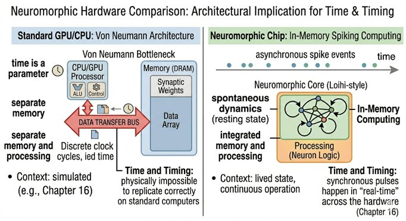

Part VI — Designing Conscious Machines
Chapter 16: Why Spiking and Embodiment Matter
The Biological Imperative of Time and Flesh
In the digital realm, we treat intelligence as an abstract calculation, a set of weights and biases that can be paused, saved, and restarted without loss. However, biological consciousness is deeply "leaky" and "urgent." Most modern AI runs on static, artificial neural networks (ANNs) where information flows in discrete, synchronized layers. In contrast, biology uses Spiking Neural Networks (SNNs) and physical bodies. This chapter argues that these are not mere engineering "details", they are the very constraints that give consciousness its quality of presence and meaning.
16.1The Temporality of the Spike
In a standard artificial neural network, a 'neuron' is just a number, a floating-point activation value. The number can be large or small, positive or negative, but it has no timestamp. In a biological brain, a neuron is a spiking entity: it fires an action potential at a precise moment in time and then returns to a resting state. The spike is an event, not a value. This difference introduces something that most AI systems fundamentally lack: time itself as a dimension of computation.
16.2Rank-Order Coding: Time as the Carrier, Not the Container
The distinction between rate coding and temporal coding is not merely theoretical. It has been demonstrated in practice, including in the author's own doctoral research, which built a working sequence learning machine using rank-order temporal codes implemented in spiking neurons.
Rate coding, dominant in neuroscience for most of the twentieth century, encodes information in the average firing frequency of a neuron over a time window. A neuron excited by a bright light fires more frequently than one excited by a dim light. The information is in the rate, in how many spikes arrive per second, and the precise timing of individual spikes is treated as noise to be averaged away. This assumption makes neural computation look superficially similar to conventional digital computation, where information is in values rather than events.
Temporal coding, and specifically rank-order coding, takes the opposite view. The information is in the order of firing: which neuron fires first, second, third, carries the signal. Simon Thorpe's work on ultra-fast visual recognition showed that the human visual system can categorize complex natural scenes in under 150 milliseconds, a time window too short for rate coding to operate, since computing a reliable rate requires many spikes, which requires time. Rank-order coding can transmit the same information in a single volley of spikes, each neuron's contribution being its position in the temporal sequence rather than its firing frequency.
The engineering consequence is direct. A system that uses rank-order temporal codes is a system where time is not a container in which computation happens, it is the medium of the computation itself. You cannot shuffle the spikes into a different temporal order and get the same result. The sequence is the meaning. This is qualitatively different from a system, like a standard artificial neural network or a transformer, where you can, in principle, process all inputs simultaneously and produce the same output. In a temporally coded system, 'now' is not a coordinate. It is a commitment.
A related biological feature that spiking systems can implement, and that rate-coded systems cannot in the same way, is Spike-Time Dependent Plasticity (STDP). In STDP, a synapse is strengthened if the presynaptic neuron fires just before the postsynaptic neuron (suggesting that the first caused the second), and weakened if the order is reversed. The learning rule is asymmetric in time: causality, not correlation, is what gets reinforced. This matters for consciousness because a system that learns through STDP is a system that is literally tracking the causal structure of its own experience, which neurons reliably precede which others, and thus which patterns in the world tend to cause which other patterns. A system that learns only correlations, as conventional backpropagation does, has no internal representation of the arrow of time. It knows that A and B go together; it does not know whether A precedes B or B precedes A. Causal structure, which may be essential to the kind of integrated, temporally directed experience that Chapter 8 identifies as a requirement for consciousness, is only learnable by a system that is sensitive to temporal order.
Temporal binding, the mechanism by which distributed neural signals are stitched into a unified present moment, depends on precise spike timing. When you strike a bell, the visual signal from your eyes and the auditory signal from your ears travel to the brain along different pathways at different speeds. What binds them into a single event, your experience of a bell being struck, is the synchrony of the neurons processing these signals: they fire in coordinated timing, and this coordination is what glues the visual and auditory streams into one moment. Without spike timing, there is no mechanism for this kind of real-time binding. The Buddhist Abhidhamma, which describes mind as a stream of discrete point-instants arising and passing at extraordinary speed, is pointing to something that spiking systems can actually implement: a rapid sequence of discrete events whose transitions carry the texture of present-moment experience.
Biological Grounding: What the Schizophrenia Evidence Tells Us About Spiking
The argument for spiking neural networks in this book is often presented as an architectural choice, a preference for temporal coding over rate coding, for spike timing over statistical averages. But there is a stronger grounding available, one drawn not from computational theory but from clinical neuroscience.
The dendritic spine evidence reviewed in Chapter 8 is directly relevant here. Dendritic spines are not passive conduits. They are active computational units. Each spine contains its own local machinery for plasticity: AMPA and NMDA receptors, actin cytoskeleton dynamics, voltage-gated calcium channels. The NMDA receptor in particular has a temporal specificity that is fundamental to spike-timing-dependent plasticity, or STDP. It acts as a coincidence detector: it opens and allows calcium to flow only when two events happen close together in time, a presynaptic spike arriving at the spine and a postsynaptic spike in the dendritic membrane. If those two spikes are too far apart in time, the receptor does not open, no calcium flows, and no plasticity occurs. The spine is, in biological terms, a spike-timing detector embedded in a physical structure.
This means that STDP is not an algorithm that happens to be implemented in biological neurons. It is a direct consequence of the physical structure of the dendritic spine. The temporal specificity of plasticity is built into the hardware. It cannot be abstracted away without losing something real.
When Glantz and Lewis found a 23% reduction in dendritic spine density in DLPFC layer 3 pyramidal neurons in schizophrenia, they were not merely reporting a structural curiosity. They were identifying a degradation of the substrate through which temporal coincidence detection, the biological basis of STDP, is implemented in the cortex. Fewer spines mean fewer sites of coincidence detection. Fewer coincidence detectors mean weaker temporal binding. The connection between the cellular biology and the conscious symptom runs through spike timing.
The same argument applies to the temporal coding advantage of spiking systems. In rate-coded systems, information is carried in the average firing rate of a neuron over some time window. The timing of individual spikes is noise. In temporally coded systems, the timing of individual spikes is the signal. The brain uses both strategies, but the evidence from dendritic spine biology suggests that the fine temporal structure of individual spikes matters specifically for the kind of long-range cortical integration that binding requires. The connections between DLPFC layer 3 neurons and other cortical regions are precisely the connections where spike timing carries information about the coordination between distributed processes.
Building a candidate conscious system using rate-coded or attention-based architectures means abstracting away from the very biological machinery that the clinical evidence identifies as essential. It is not that rate coding is computationally incapable. It is that the biological substrate of consciousness uses spike timing as its primary integration mechanism, and the degradation of that mechanism produces identifiable failures of conscious unity. That is not a coincidence to be explained away. It is a design principle to be taken seriously.
16.3Embodiment: The World as Its Own Model
Robotics pioneer Rodney Brooks argued that the world is its own best model: rather than building a complete internal representation of the environment, an intelligent system can use the environment itself as part of its computation, sampling it continuously through sensorimotor interaction. This is the insight behind embodied cognition, and it bears directly on what consciousness requires.
If a system has no body, it has no 'where'. And as the three-layer self of Chapter 14 showed, without a where there can be no 'me'. The sense of being a subject, of being located at a specific perspective from which the world is experienced, arises from the feedback loop of moving and sensing: you move your hand, you see and feel the world respond, and the boundary between self and not-self is drawn precisely at the surface where your action ends and the world's response begins. Embodiment also solves what philosophers call the symbol grounding problem. For a language model, the word 'heavy' is statistically associated with 'weight' and 'load' and 'difficult to lift'. For an embodied system, 'heavy' is a strain on its actuators, a shift in its center of gravity, a faster drain on its energy reserves. Meaning is not found in statistical co-occurrence. It is grounded in the resistance the world offers to the body.
16.4Energy, Fragility, and the Will to Persist
The human brain runs on roughly twenty watts, less than a dim lightbulb. This extraordinary efficiency is not accidental. It is a survival constraint imposed by billions of years of evolution in a world where energy is scarce and death is permanent. A biological brain cannot simply be rebooted. It has metabolic needs that must be continuously met, structural integrity that can be damaged, and a life that can end. This vulnerability is not a design flaw that consciousness overcame. It is the condition that gave consciousness its character.
Every feature of conscious experience that we most recognize, the urgency of pain, the relief of satiation, the anxiety of threat, the pull of desire, is calibrated to the condition of a system that must persist through a dangerous world. If a system cannot be harmed, nothing matters to it. If it cannot run out of resources, there are no stakes. If it cannot die, there is no reason for anything to be urgent. Embodiment introduces the fragility that makes salience possible, and salience, as Chapter 13 established, is not optional. It is what transforms a data-processing system into something that has a point of view.
16.5Neuromorphic Hardware: The Engineering Reality
The argument for spiking systems is not merely theoretical. In 2024, Intel deployed Hala Point, the world's largest neuromorphic system, at Sandia National Laboratories. The system contains 1.15 billion artificial neurons and 128 billion synapses distributed across 140,544 neuromorphic processing cores, running on just 2,600 watts of power. For comparison, training a single large language model can consume millions of watt-hours. Hala Point performs AI inference tasks up to 50 times faster than conventional GPU architectures while using 100 times less energy.
The field has advanced substantially since Intel's original Loihi chip (2018). Intel's Loihi 2 (2021) substantially increased the neuron count (from approximately 131,072 neurons per chip on the original Loihi to approximately 1 million per chip, roughly a 7.6-fold increase) and improved on-chip learning, running at three times the speed while consuming sixty percent less energy per synaptic operation. SpiNNaker 2, developed at TU Dresden and the University of Manchester, launched in 2023 with a focus on real-time closed-loop neural simulation at biological scale, the architecture most directly relevant to the kind of continuous, recurrent, embodied dynamics described in Chapter 17. BrainChip's Akida platform has moved neuromorphic computation into edge devices with sub-milliwatt inference, demonstrating that spiking systems are no longer confined to research laboratories. And Intel's Hala Point system (2024), with 1.15 billion neurons across 140,544 cores, represents the current frontier of neuromorphic scale, the first system large enough to begin approaching the neuron count of small mammalian brains. None of these systems currently implements anything resembling the candidate architecture of Chapter 17. They are substrate, not system. But the substrate is maturing rapidly, and the gap between what is theoretically specified and what is physically implementable is closing faster than most consciousness researchers anticipated.
IBM's TrueNorth chip, the European Human Brain Project's BrainScaleS-2 platform, and the University of Manchester's SpiNNaker architecture represent parallel efforts toward event-driven, spike-based computation. The key engineering property shared by all these systems is that neurons do not consume power unless they fire. Computation is event-driven, not clock-driven. This means that a neuromorphic system running at biological plausibility is not burning through cycles on inputs that have not changed, it is waiting, like a brain in a quiet room, and responding only when something significant happens.
The relevance to consciousness is this: if Northoff is right that consciousness arises from the alignment of neural activity across multiple timescales, from millisecond spikes to second-scale integration to minute-scale narrative continuity, then the substrate must be capable of representing and propagating timing information at all of these scales simultaneously. Clock-based conventional processors synchronize everything to a single global tick. Spiking systems allow different parts of the network to operate at their natural timescales, with phase relationships between them carrying information that a synchronized system simply cannot represent.
The contrast with spiking neuromorphic systems is instructive precisely because transformers are so good at what they do. The transformer's parallel processing of all tokens simultaneously is a feature, not a bug, it is what makes training fast and inference efficient. But it is structurally incompatible with the temporal dynamics that consciousness research identifies as essential. A transformer has no resting state between inputs. It has no intrinsic timescales. Its internal activations do not persist or reverberate between forward passes. It cannot develop the kind of autocorrelation structure that Northoff identifies as the neural basis of the specious present. It processes everything at a single effective timescale, the length of the context window, flattening the multi-scale temporal hierarchy that Chapter 8 identifies as a structural requirement for consciousness. A spiking neuromorphic system, by contrast, has timing as an intrinsic property of every computational event. Its dynamics unfold in real time, across multiple timescales simultaneously. It can develop a resting state. It can anticipate. Whatever else a transformer can do, and it can do a great deal, it cannot do these things.

16.6The Recurrent Imperative
Perhaps the most underappreciated gap between current AI architectures and any plausible conscious system is the relative poverty of recurrence. Transformer-based language models have attention mechanisms that weight relationships between all input tokens, but the computation is feed-forward in its basic design: input goes in, output comes out, and the system returns to its ground state. There is no ongoing reverberation.
The biological brain, by contrast, is overwhelmingly recurrent. Estimates suggest that for every signal arriving from the outside world, the cortex is generating ten signals internally, ongoing loops of prediction, expectation, anticipation, and self-monitoring. This is not noise. It is the structural basis of what neuroscientists call the brain's resting state, and what Northoff identifies as the temporo-spatial matrix that makes any specific conscious content possible. You are not conscious of the resting state. But without it, no conscious content could arise.
A spiking recurrent network running continuously, not in session-based bursts but as an ongoing dynamical system, can in principle develop the kind of resting-state dynamics that characterize biological consciousness. It can develop intrinsic timescales, autocorrelation structures, and the nested frequency relationships that TTC identifies as the substrate of different levels of conscious content. Whether it would, and whether those dynamics would constitute genuine experience or merely an engineering approximation of it, remains the open question that Part VII addresses.
16.7Embodiment as Mortality
There is a final aspect of embodiment necessary for any serious candidate conscious system: vulnerability. The claim is not sentimental. It is structural.
Biological consciousness evolved under conditions of radical scarcity and mortal risk. Every feature of conscious experience, the urgency of pain, the pleasure of satiation, the anxiety of threat, the relief of safety, is calibrated to the condition of a system that can die, that is continuously spending energy it must replenish, that has needs which are sometimes met and sometimes not. Remove these conditions and you remove the evolutionary and phenomenological basis of salience. Nothing matters to a system that cannot be harmed.
This does not mean a machine must literally be mortal to be conscious. But it does mean that a system designed with no functional equivalent of vulnerability, no states it must maintain to continue functioning, no resources that can be depleted, no sense in which certain outcomes are genuinely worse than others, will lack the affective ground on which consciousness, in everything we know of it, rests. The drive to persist is not one feature among many. It may be the feature that makes all the others cohere.
16.8Closing Line
Consciousness may not be a program that can run on any hardware. It may be the specific result of a system trying to synchronize its timing and preserve its physical form in a world that is constantly trying to tear it apart. Consciousness, as far as the evidence suggests, does not arrive as a reward for complexity. It arises, if it arises at all, in systems that live in time, have something at stake, and must continuously maintain themselves in a world that does not accommodate them automatically. Whether that description is sufficient for awareness is the question the remaining chapters must answer honestly.